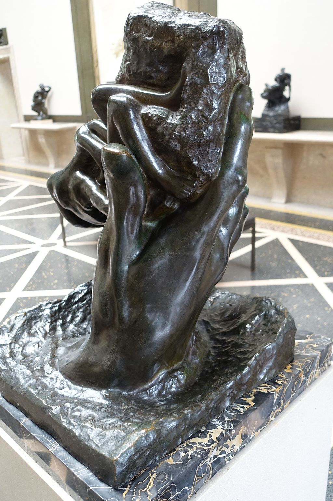

<head>
<meta charset="UTF-8" />
<meta name="keywords" content="drawing, painting" />
<meta name="description" content="drawings by Sunjy" />
<title>Sunjy</title>
<link rel="shortcut icon" type="image/x-icon" href="../../mImages/mCommon/favicon.ico" media="screen" />
<link rel="stylesheet" type="text/css" href="../../mCsses/mCommon/mCssA.css" />
<link rel="stylesheet" type="text/css" href="../../mCsses/mCommon/mCssB.css" />
<link rel="stylesheet" type="text/css" href="../../mCsses/mCommon/mCssC.css" />
<link rel="stylesheet" type="text/css" href="../../mCsses/mCommon/mCssD.css" />
<link rel="stylesheet" type="text/css" href="../../mCsses/mContent/mCssA.css" />
<link rel="stylesheet" type="text/css" href="../../mCsses/mContent/mCssB.css" />
<link rel="stylesheet" type="text/css" href="../../mCsses/mContent/mCssC.css" />
<link rel="stylesheet" type="text/css" href="../../mCsses/mContent/mCssD.css" />
</head>
<script type="text/javascript" src="../../mScripts/mContent/mContentAA.js" /></script>
<script type="text/javascript" src="../../mScripts/mContent/mContentAB.js" /></script>
<script type="text/javascript" src="../../mScripts/mContent/mContentAC.js" /></script>
<script type="text/javascript" src="../../mScripts/mContent/mContentAD.js" /></script>
<script type="text/javascript"></script> 
<script type="text/javascript">
document.write('<div class="mImgAbsolute"></div>');
/*
document.write('<p class="mFontSizeBColor" />From a white paper...</p>');
document.write('<table class="center"><tr><td>');
document.write('');
document.write('</td></tr></table>');
*/
</script>


<script type="text/javascript">
document.write('<p class="mFontSizeBColor" />The Hand of God</p>');
document.write('<p class="mFontSizeSColor" />“The Hand of God” was modeled by Auguste Rodin, and it attempts to compare the art of sculpture to the divine process of creation.<br><br>The sculpture depicts a right hand, emerging from the earth, holding a lump of clay from which two struggling emergent figures are being modeled.<br><br>In this sculpture, Rodin depicts the metaphor of God’s hand, cradling the material from which male and female emerge. The work presents Adam and Eve entwined in fetal positions and emerging from a lump of earth cradled in God’s hand. Rodin said,<br><br> “When God created the world,<br> it is modeling; he must have thought …”.  <br><br>There are also marble versions of “The Hand of God” by Rodin, which makes use of both the technical and symbolic aspects of marble.<br><br>The material plays a vital role in the sculpture, especially the under-worked and roughly chiseled portions.<br><br>During a trip to Italy in 1876, Rodin had explored the works by Michelangelo in which the figures similarly materialize out of rough stone, symbolizing the process of artistic creation.<br><br>More explicit in the marble sculpture than the bronze casting of this piece is the contrast between the highly polished areas and the rough rock.<br><br>Also, the posture of the woman recalls the works of other sculpture masters such as Michelangelo. For Michelangelo, a sculpture was buried in the marble and had to be extracted through the sculptor’s skill. Rodin was a modeler, with a different approach.<br><br>The Hand of God seems to be paying homage to both of these two methods. The symbolistic title of this piece links it to a whole series of works focus on hands, made during the 1890s, such as the Cathedral and the Secret.<br><br>During his career, Rodin modeled thousands of hands as small clay studies. For Rodin, the hand and the interplay of hands within groups of figures were expressive components of his sculptures.<br><br>Rodin imbued hands with a range of emotions, from anger and despair to compassion and kindness. He kept many hand clay studies in his studio, where he would contemplate them as sculptural forms in space. Rodin stated that he felt an:<br><br>“intense passion for the expression of the human hands.”<br><br>When Rodin composed a new figure, he often experimented with different hands at varying angles to explore the possibilities of new expressive combinations.<br><br>This approach reinforced Rodin’s interest in the partial figure, and he felt that representations of parts of the body, such as the hand, are not necessarily dependent upon a complete figure to convey meaning.<br></p>');
document.write('<table class="center" /><tr><td>');
document.write('<br>The sculpture depicts a right hand, emerging from the earth, holding a lump of clay from which two struggling emergent figures are being modeled.<br><br>In this sculpture, Rodin depicts the metaphor of God’s hand, cradling the material from which male and female emerge. The work presents Adam and Eve entwined in fetal positions and emerging from a lump of earth cradled in God’s hand. Rodin said,<br><br> “When God created the world,<br> it is modeling; he must have thought …”.  <br><br>There are also marble versions of “The Hand of God” by Rodin, which makes use of both the technical and symbolic aspects of marble.<br><br>The material plays a vital role in the sculpture, especially the under-worked and roughly chiseled portions.<br><br>During a trip to Italy in 1876, Rodin had explored the works by Michelangelo in which the figures similarly materialize out of rough stone, symbolizing the process of artistic creation.<br><br>More explicit in the marble sculpture than the bronze casting of this piece is the contrast between the highly polished areas and the rough rock.<br><br>Also, the posture of the woman recalls the works of other sculpture masters such as Michelangelo. For Michelangelo, a sculpture was buried in the marble and had to be extracted through the sculptor’s skill. Rodin was a modeler, with a different approach.<br><br>The Hand of God seems to be paying homage to both of these two methods. The symbolistic title of this piece links it to a whole series of works focus on hands, made during the 1890s, such as the Cathedral and the Secret.<br><br>During his career, Rodin modeled thousands of hands as small clay studies. For Rodin, the hand and the interplay of hands within groups of figures were expressive components of his sculptures.<br><br>Rodin imbued hands with a range of emotions, from anger and despair to compassion and kindness. He kept many hand clay studies in his studio, where he would contemplate them as sculptural forms in space. Rodin stated that he felt an:<br><br>“intense passion for the expression of the human hands.”<br><br>When Rodin composed a new figure, he often experimented with different hands at varying angles to explore the possibilities of new expressive combinations.<br><br>This approach reinforced Rodin’s interest in the partial figure, and he felt that representations of parts of the body, such as the hand, are not necessarily dependent upon a complete figure to convey meaning.<br>" />');
document.write('</td></tr></table>');
</script>


